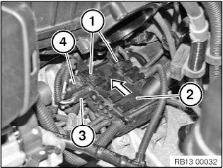
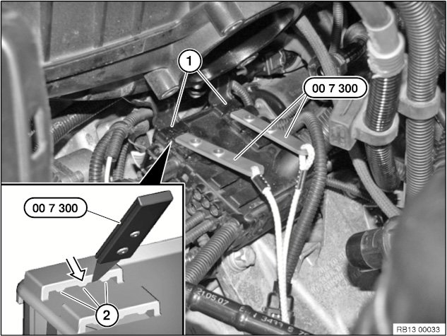
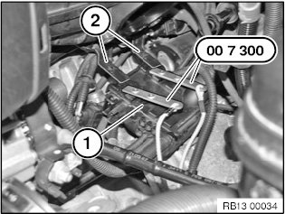
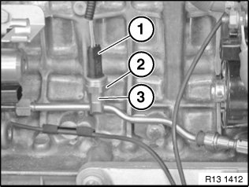
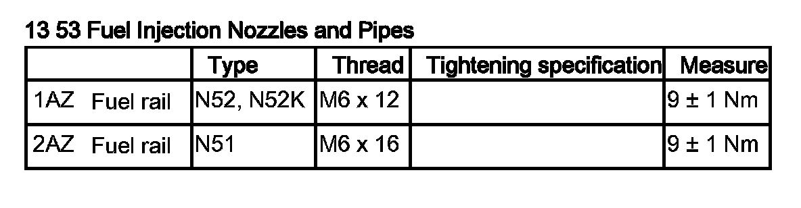
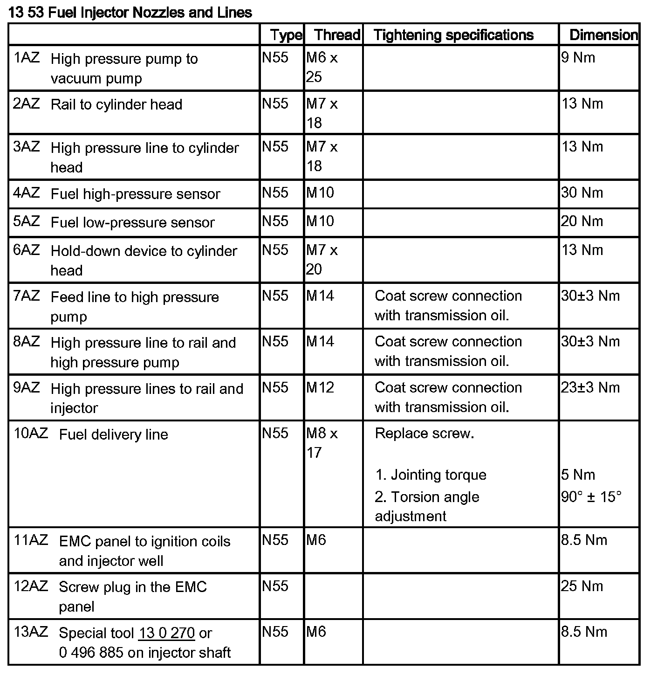
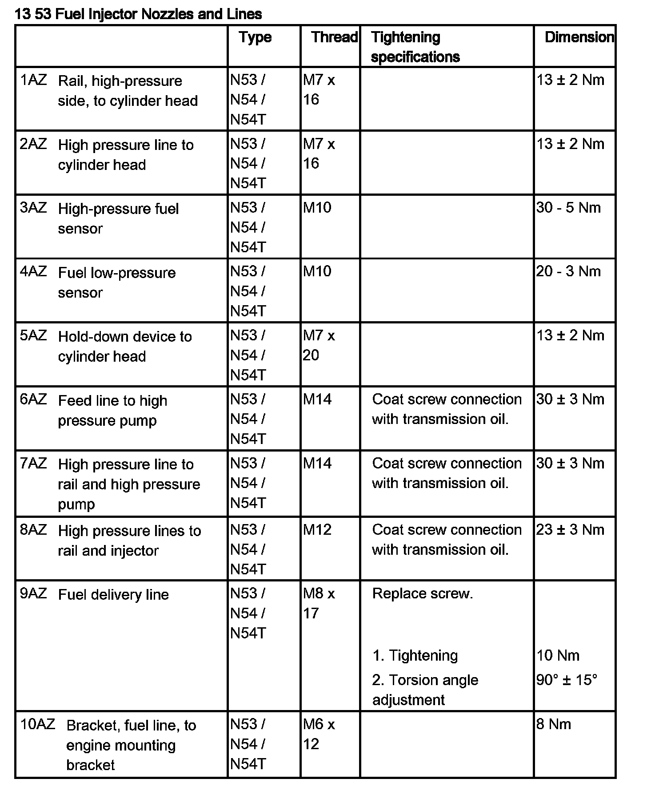

Fuel Pressure Sensor/Switch: Service and Repair
13 53 594 Replacing Low-Pressure Fuel Sensor (N54)
Special tools required:

WARNING:
Disconnect negative battery terminal (risk of fire due to short circuit on removal).
Electric fuel pump starts up automatically each time door is opened.
Carry out installation work on fuel system only with coolant temperature below 40 °C.
Wear safety goggles.

IMPORTANT:
Adhere to conditions of absolute cleanliness when working on the high-pressure fuel system.
Introduced dirt contamination can cause malfunctions in the system.
- Do not allow any dirt particles or foreign bodies to get into the system.
- Remove all traces of dirt contamination before removing lines or separate components.
- Use only fluff-free cloths.
- Seal all fuel system openings with protective caps or plugs.

Necessary preliminary work:
- Remove throttle body

Recycling:
Fuel escapes when fuel lines are detached.
Catch and dispose of escaping fuel in a suitable container.
Observe country-specific waste disposal regulations.

Apply silicone-free multifunction spray (part number 83 23 0 418 567) on to supports (1) of base well bracket (2).
Unplug connector (3) and (4) from base well.
Slide base well (2) in direction of arrow.

Insert special tool 00 7 300 in mounting points (1) on base well.
NOTE: Place tips of special tool 00 7 300 between retainers (2) and then centre (arrow).

Detach base well (1) from bracket (2) with special tool 00 7 300.

Unlock connector (1) and remove.
Release low-pressure sensor (2).
Tightening torque: 13 53 4AZ.
IMPORTANT: When releasing and tightening down sensor, grip at width across flats of low pressure line (3).
NOTE: Seal low pressure line (3) if necessary with a matching plug from set of special tools 32 1 270.

Assemble engine.
Check fuel system for leak tightness.
Check function of DME.


